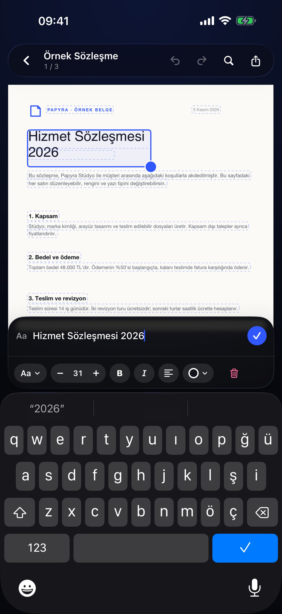
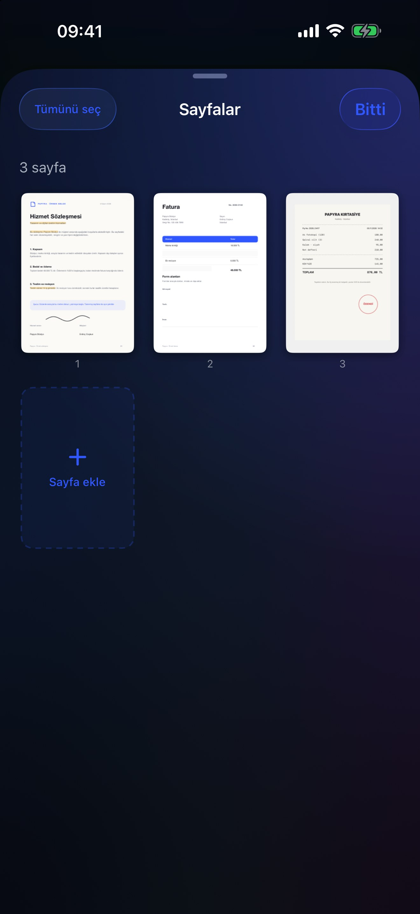
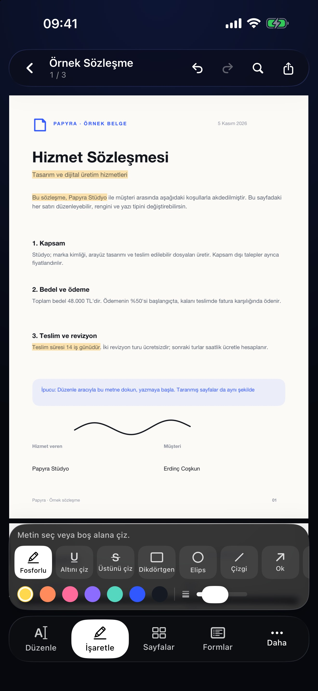
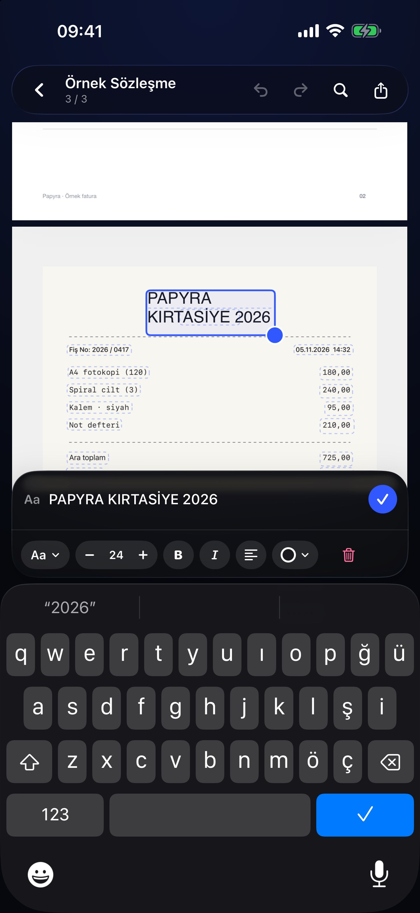
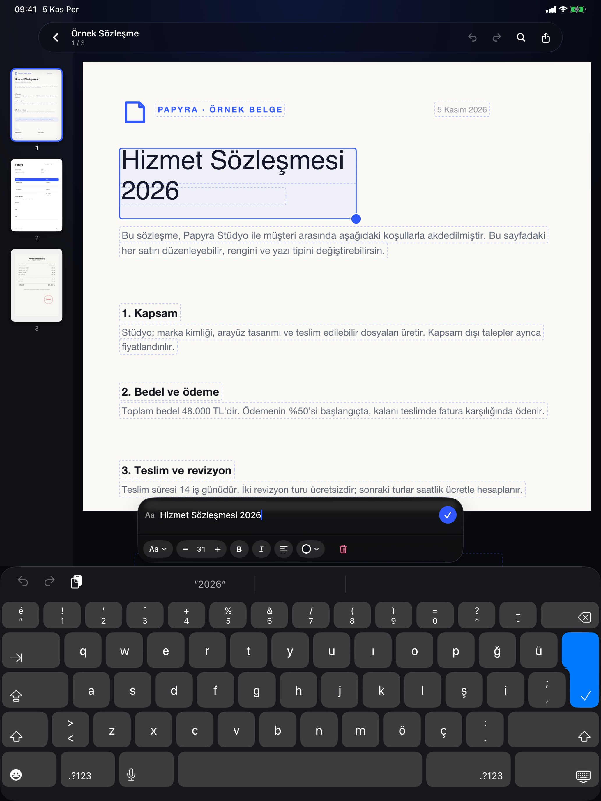

T
Edit text. Even in scans.
Tap a line, type the new wording. Papyra keeps the font size and the paper background; flattened scans are recognized with on-device OCR first.
Rewrite any line in a PDF — even a flat scan. Papyra recognizes text on the device, covers it cleanly and lets you type over it. Annotate, sign, fill forms, redact and organize pages, all without an account or an upload.

The tools you use most are always close. The rest appear when they make sense.
Tap a line, type the new wording. Papyra keeps the font size and the paper background; flattened scans are recognized with on-device OCR first.
Highlight, underline, strike through, draw with Apple Pencil, add notes, shapes, stamps, and text.
Draw a signature once, place it on any page, and flatten it when you export.
Turn paper or photos into a PDF, then add on-device OCR so scans become searchable.
Fill text fields, checkboxes, and choices. Keep the fields or flatten them on export.
Reorder, rotate, duplicate, delete, insert, extract, and merge pages without leaving the document.
Cover sensitive content, apply it for real, and verify the page afterwards. Not just a black rectangle.
Papyra has no account and no analytics. There is no document server to upload to. Your PDFs live in the app until you choose to export or share them.
Papyra is built around the page, not around menus. The PDF stays the hero. A compact glass dock keeps the five things you need within reach, and the contextual palette only appears when you are marking up.

Papyra is for contracts, forms, scans, lecture notes, and the document you have been putting off.


On supported devices, Papyra can summarize a PDF, pull out key points, and answer questions about the page in front of you. The model runs on the device. When it is not available, the feature is not shown.
AI can make mistakes. Papyra treats insights as a reading aid, not a replacement for the document.

Free. No account. No upload. Just a calmer place to work.